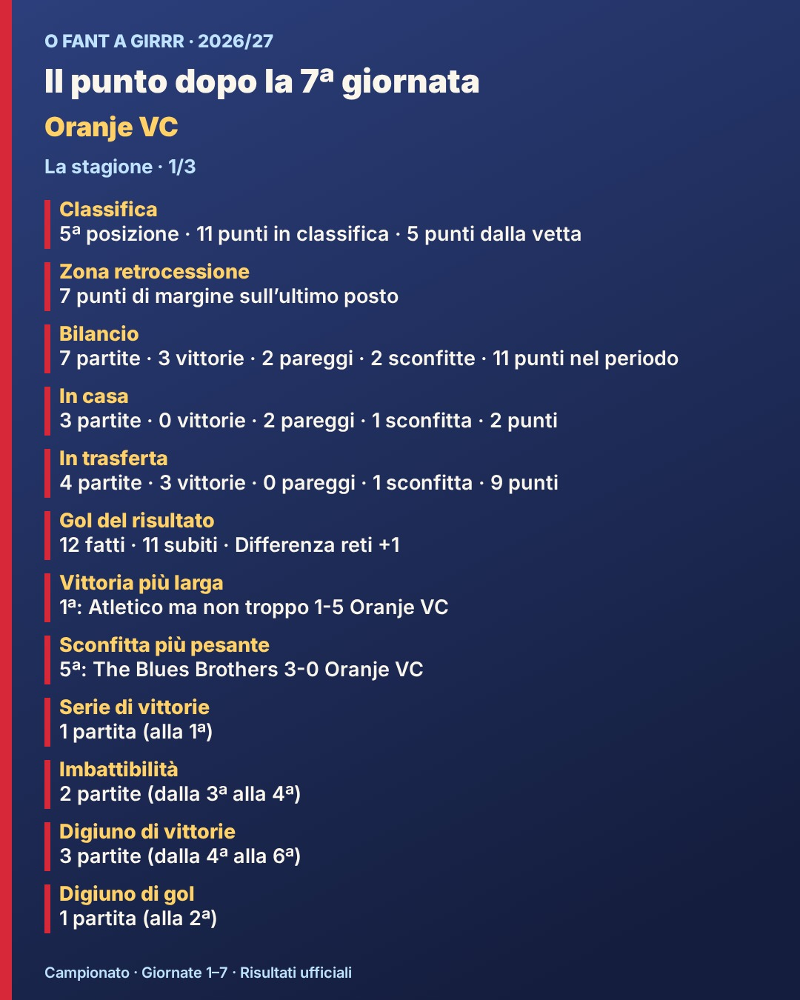
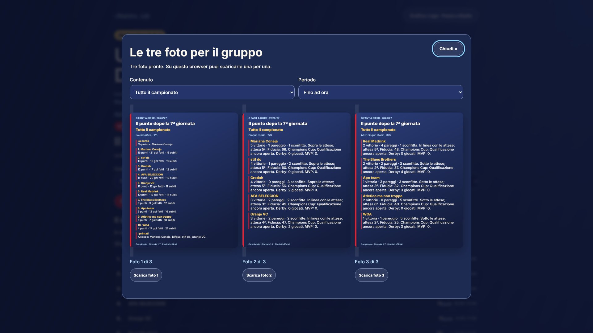
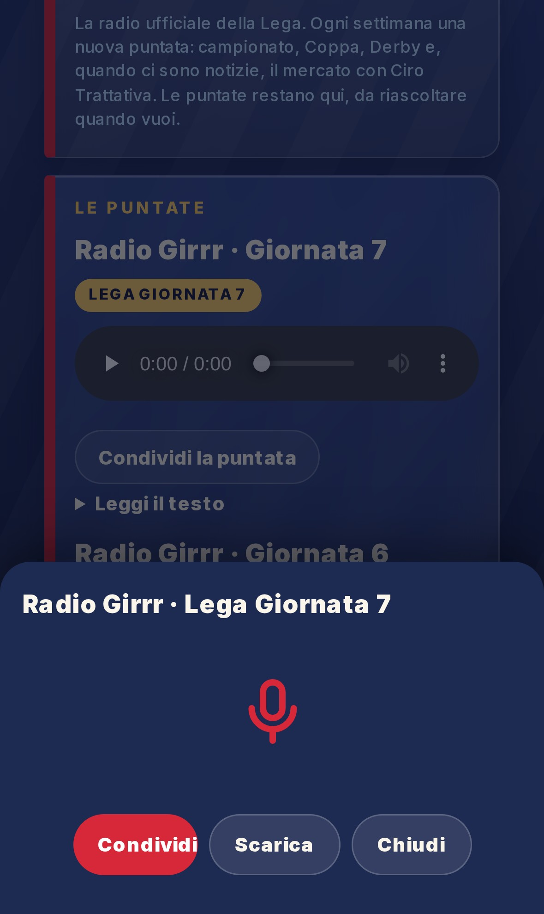

Giro di boa completo

Classifica, punti, casa e trasferta, gol del risultato, record, serie, percorso, presidente, Derby, Coppa, promesse e MVP dei tifosi. Prima della 17ª: «Il punto dopo la Nª giornata». Poi resta disponibile anche il girone d’andata.
Dove: Carriera → Giro di boa. Ogni squadra, anche per l’ospite.
Tre foto, un album

Scegli la squadra oppure tutto il campionato. Le tre foto si mandano insieme, senza testo aggiunto; sul PC si possono scaricare. I numeri tecnici restano in una parte dedicata.
Dove: Carriera → Giro di boa → Prepara le tre foto; oppure Tabellone → Condividi.
Il Tabellone che stai guardando

«Tabellone ufficiale» della giornata vista, in Campionato o Champions Cup. Per la squadra scelta: «La partita di…» e «Le ultime 5», anche da ospite.
Dove: Tabellone → Condividi.
Radio e video, anche da soli

«Condividi la puntata» sotto la Radio e «Condividi il video» sotto il video scelto. Il nuovo bilancio alimenta anche il segmento della Radio dopo la 17ª e la 19ª giornata.
Dove: Girrr Sport → Radio o Video.